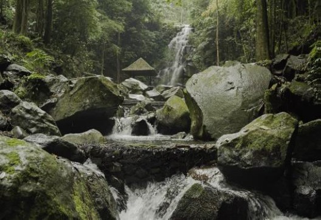
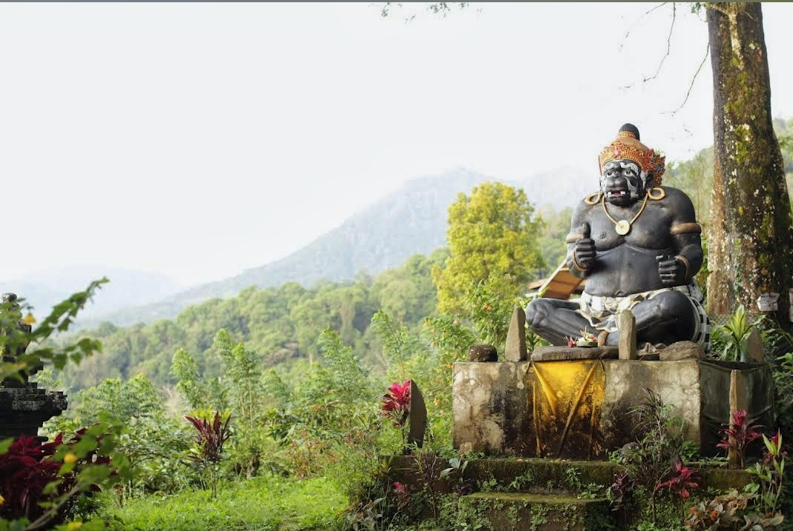
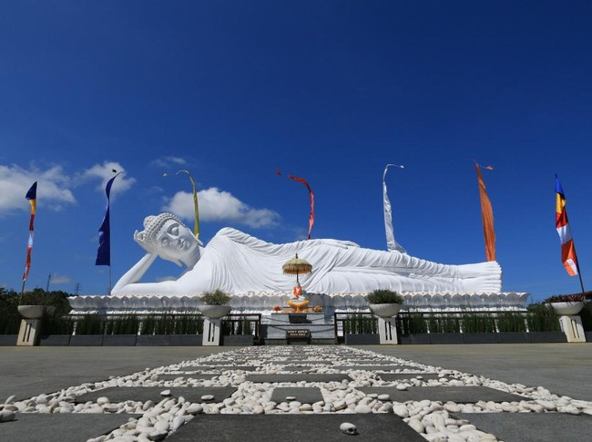

Kampung Kopi Camp
Kampung Kopi Camp menawarkan pengalaman camping yang seru di tengah perkebunan kopi yang asri. Nikmati udara segar pegunungan dan pemandangan alam yang memukau.

Telusuri kekayaan tradisi serta keindahan alam yang membentuk identitas Kecamatan Pupuan
Jelajahi tarian tradisional yang sarat makna dari berbagai daerah
Temukan pesona alam Indonesia dari gunung hingga pantai
Ketahui alat musik khas yang mengiringi kehidupan budaya kita
Jejak peradaban kuno dalam arsitektur yang megah
Pintu gerbang digital menuju harmoni alam dan tradisi di Kecamatan Pupuan. Di sini, kami merajut keindahan bentang alam agrowisata kopi dan cengkih yang hijau, kemegahan terasering sawah, hingga keunikan warisan budaya seperti alunan musik Mandolin dan sakralnya ritus tradisi lokal. Temukan panduan destinasi tersembunyi, kisah budaya yang mendalam, dan keasrian Bali Barat yang sesungguhnya bersama kami. Selamat menjelajah!


Rejang Ayunan merupakan tarian sakral yang penuh makna spiritual, menggambarkan harmoni antara manusia, alam, dan Tuhan.
Jejak peradaban di wilayah ini bermula dari Desa Bantiran, sebuah desa kuno yang memegang peranan vital dalam tatanan sejarah Bali. Keberadaan Bantiran telah tercatat dalam berbagai prasasti penting, di antaranya Prasasti berangka tahun Saka 923 (1001 Masehi) pada masa pemerintahan Ratu Sri Gunapriyadharmapatni dan Raja Sri Dharmodayana Warmadewa. Jauh sebelumnya, nama Nayakan Bantiran (Tetua Desa Bantiran) juga telah disebut dalam Prasasti Gobleg (Pura Batur A) pada era Raja Sri Ugrasena (915-936 Masehi).
Ketangguhan masyarakatnya pun teruji dalam sejarah; pada tahun 1150 Masehi, Raja Sri Maharaja Jayasakti bahkan pernah memberikan keringanan pajak selama lima tahun bagi penduduk Bantiran yang tersisa pasca-peristiwa besar, sebagai bentuk perlindungan kerajaan terhadap desa yang sakral ini..
Pada mulanya, wilayah Pupuan bukanlah sebuah pemukiman, melainkan area terbuka yang berfungsi sebagai peluputan sapi (tempat penggembalaan). Seiring perkembangan zaman, warga mulai menetap dan membuka hutan di sana. Hingga tahun 1988, Pupuan secara administratif dan adat masih menjadi satu kesatuan dengan Desa Bantiran..
Momentum transisi terjadi pada tahun 1988 saat terjadi pemekaran wilayah kedinasan dan adat. Namun, proses pemisahan ini diiringi oleh gejolak spiritual dan fenomena alam yang menandakan bahwa secara batiniah, Bantiran dan Pupuan adalah entitas yang tak boleh terpisahkan. Sebagai pengikat spiritual (Tetamian), Pura Kayu Padi yang semula milik Bantiran diserahkan kepada Pupuan. Hal ini memastikan bahwa akar sejarah dan garis keturunan (wed) dari Bantiran tetap terjaga melalui para penglingsir dan pemangku yang menetap di Pupuan, menjaga keharmonisan dua desa yang sejatinya berasal dari satu rahim yang sama..
Salah satu warisan paling sakral dari sejarah panjang ini adalah Tari Rejang Ayunan. Tarian ini diperkirakan lahir bersamaan dengan mulai terbentuknya pemukiman di Pupuan, yang idenya berakar dari aktivitas masyarakat saat merabas hutan (membuka lahan). Pementasan perdana tarian ini tercatat saat upacara Ngusaba Tegteg atau Ngenteg Linggih setelah pembangunan Pura Puseh dan Pura Desa selesai. Keberadaan tarian ini juga mencerminkan pengaruh besar ajaran Mpu Kuturan yang menata ulang sistem religi masyarakat lokal melalui konsep Tri Khayangan. Jauh sebelum tatanan tersebut formal, Bantiran telah memiliki sistem peradaban yang kuat, dibuktikan dengan keberadaan situs kuno seperti Pura Batuh Pejuritan dan Pura Tejakula, yang menjadi saksi bisu perjalanan spiritual masyarakat setempat dari zaman prasejarah hingga masa keemasan Majapahit..

Desa Pujungan terdapat kesenian yang unik. Kesenian itu bernama mandolin. Alat musik mandolin dipadukan dengan gamelan dan alat musik modern seperti gitar dan bass, sehingga tercipta harmoni yang khusus.
Kini mandolin masih lestari di Desa Pujungan. Salah satu kelompok (sekha) yang masih melestarikan kesenian itu adalah Sekha Eka Mertasari.
Sejarah Mandolin di Desa Pujungan merupakan bentuk akulturasi budaya yang unik antara tradisi Tionghoa dan kesenian lokal Bali.
Gamelan Mandolin diyakini lahir di Desa Temukus, Buleleng, sebelum tahun 1930-an. Instrumen ini awalnya diciptakan oleh warga etnis Tionghoa setempat dengan sebutan "Shaolin". Seiring dengan jalur perdagangan, kesenian ini bermigrasi ke wilayah Pupuan. Di sana, instrumen ini mulai diproduksi secara lokal oleh Pan Sekar (Alm.) dan masyarakat setempat mulai mempopulerkannya dengan nama Mandolin.
Masa Rintisan Pribadi (Tahun 1930)
Mandolin dibawa ke Desa Pujungan oleh para pedagang yang melintasi jalur Buleleng-Tabanan. Sosok yang pertama kali merakit instrumen ini di Pujungan adalah I Nengah Madia (Gurun Suri).Proses pembuatan dilakukan di rumah I Majar yang awal mulanya hanya untuk hiburan yang sifatnya pribadi/keluarga dan belum terbentuk dalam suatu wadah organisasi (sekha) termasuk segala peralatannya yang masih sederhana.
Setelah puluhan tahun hanya menjadi alat musik rumahan, muncul dorongan dari tokoh kesenian setempat yang optimis bahwa instrumen unik ini harus dilestarikan secara kolektif sehingga pada Tahun 1963 – 1965 dibentuklah kelompok atau Sekha Pertama, kelompok atau Sekha Mandolin pertama ini dipimpin oleh seniman bernama I Wayan Lancar (Gurun Suarti).
Di era ini, Mandolin mulai keluar dari ruang lingkup rumah tangga dan aktif dalam kegiatan masyarakat, di antaranya:
1. Menjadi media pengabdian masyarakat.
2. Memeriahkan masa kampanye partai politik (saat itu PNI).
3.Mengisi acara peringatan hari-hari besar nasional.
Meskipun sempat berjaya dan dikenal luas di masyarakat, namun Pasca-1965 kelompok ini tidak bertahan lama yang dikarenakan oleh suatu hal ekha mandolin ini sempat mengalami kepakuman dan non aktif dalam segala, ketidakaktifan yang berlarut-larut ini akhirnya menyebabkan organisasi tersebut bubar, sehingga kesenian Mandolin sempat menghilang dari peredaran publik selama hampir dua dekade (hingga dibangkitkan kembali tahun 1984).
Melihat potensi Bali sebagai destinasi wisata dunia, maka pada tahun 1984 dipelopori oleh I Made Sunita ( pada saat itu menjabat sebagai kepala dusun mertasari), maka di bangun kembali kesenian mandolin ini yang sempat tidak aktif beberapa tahun kedalam sebuah organisai/sekha mandolin yang diberi nama sesuai dengan nama dusun yaitu sekha Mandolin EKA MERTASARI yang sampai saat ini masih berdiri kokoh dengan banyak aktifitas pengabdiannya misalnya dalam :
-Aktif mengikuti kegiatan tahunan daerah bali yaitu PKB (pesta kesenian bali) tahun 1993,1994,1995 dan terahir mengikuti pameran pembangunan daerah kabupaten tabanan.
-Memeriahkan hari-hari nasional.
-Menyambut kunjungan kerja dari teras dari lingkungan department dalam negeri dan instansi lain.
-Mengisi/melengkapi upacara agama hindu dan perayaan hari-hari suci umat Hindu.
Baru-baru ini salah seorang pelaku seni yang terbilang cukup muda telah membuat inovasi baru dengan membentuk Sekhe Mandolin, perangkat yang mereka sebut dengan New Nolin. Berkat kemajuan tekhnologi yang berkembang salah seorang generasi muda yang bernama I Komang Angga Purbawa Mahasiswa ISI Denpasar yang sudah menyandang gelar S2 nya, berhasil menciptakan sebuah alat Nolin yaiu perpaduan antara Harva dengan Gitar sehingga menghasilakan suara yang khas .Sekhe Nolin itu sebagaian besar dimainkan oleh anak-anak muda dari Desa Pujungan.
Gamelan Mandolin di Desa Pujungan memiliki ciri khas teknis yang unik:
Formasi Alat: Satu set terdiri dari 6 instrumen, di mana masing-masing alat memiliki 5 buah senar.
Instrumen "Ugal": Dari keenam alat tersebut, satu difungsikan sebagai Ugal (pemimpin irama). Perbedaannya terletak pada senar tengah yang lebih besar, sehingga menghasilkan suara yang lebih rendah, tegas, dan dominan.
Anatomi Alat: Terdiri dari komponen trampa (badan) dengan resonator, lima senar, penggesek, dan panggul.
Teknik Main: Tangan kanan bertugas menggesek senar, sementara tangan kiri menekan panggul untuk menentukan nada.

kata Ngusaba berasal dari bahasa Bali "Usaba" yang berarti persembahan atau upacara syukuran. Upacara ini merupakan momentum religius bagi umat Hindu di Bali untuk mempersembahkan hasil bumi kepada Tuhan (Ida Sang Hyang Widhi Wasa) serta dewa-dewa pelindung alam.Lebih dari sekadar ritual, Ngusaba adalah bentuk pemeliharaan harmoni antara manusia, alam, dan Sang Pencipta yang berlandaskan konsep Tri Hita Karana.

Salah satu hal yang paling menonjol dari Ngusaba Ngubeng di Desa Batungsel adalah sifatnya yang sangat sakral atau "Pingit". Hal ini ditandai dengan beberapa karakteristik khusus seperti:
A.Waktu yang Tak Menentu:
Berbeda dengan upacara tahunan biasa, Ngusaba Ngubeng dilaksanakan dalam rentang waktu 10 hingga 15 tahun sekali,masyarakat Desa Batungsel harus menunggu petunjuk dari para pemangku agar mendapatkan duwasa ayu (hari baik) karena nilai kesakralannya yang sangat tinggi.
B.Keyakinan Kental:
Masyarakat Batungsel percaya bahwa sulitnya menentukan waktu pelaksanaan adalah tanda bahwa upacara ini membawa energi spiritual yang besar dan harus dijaga kemurniannya.
selain Ngusaba ngubeng, terdapat juga ngusaba Tabuh yang di laksanakan secara serempak dengan Ngusaba Ngubeng, namun dengan lokasi yang berbeda, jika Ngusaba Ngubeng dilaksankan di Bale Agung maka Ngusaba Tabuh dilaksankan ke Pantai Soka, selain itu terdaat juga Ngusaba Gede. untuk ngusaba Gede ini dilaksankan di puncak kedaton dan Gunung tengah
Upacara yang berpusat di Pura Bale Agung Desa Adat Batungsel ini membawa misi mendalam bagi kelangsungan hidup masyarakat desa Batungsel sebagai wujud syukur yang tulus atas limpahan hasil padi serta kekayaan perkebunan yang telah dinikmati. Momentum sakral ini sekaligus menjadi ruang permohonan spiritual agar sawah dan perkebunan senantiasa dianugerahi kesuburan serta terlindungi dari segala ancaman hama maupun penyakit.
Di balik prosesinya, tradisi ini juga menjadi perekat solidaritas sosial yang kuat, di mana seluruh krama desa bersatu dalam semangat gotong royong untuk mempersiapkan sesajen dan sarana upacara secara bersama-sama. Pada akhirnya, Ngusaba Ngubeng bukan sekadar sebuah upacara rutin, melainkan manifestasi janji suci masyarakat Batungsel dalam menjaga keseimbangan alam dan keharmonisan hidup demi keberlanjutan generasi di masa depan.
Setiap Keindahan yang bersembunyi di balik megahnya Gunung Batukaru.
Kampung Kopi Camp menawarkan pengalaman camping yang seru di tengah perkebunan kopi yang asri. Nikmati udara segar pegunungan dan pemandangan alam yang memukau.

Air terjun yang menyejukkan dengan aliran air jernih yang mengalir dari lereng Gunung Batukaru. Tempat ideal untuk melepas penat dan menikmati keindahan alam.
Pura Malen berdiri megah di lereng bukit dengan pemandangan hamparan sawah dan perkebunan yang hijau. Suasana spiritual yang tenang dan damai.



Kampung Kopi Camp merupakan sebuah destinasi wisata yang merepresentasikan kekayaan alam serta autentisitas kopi Robusta di wilayah Pupuan, Bali. Berawal dari sebuah penginapan sederhana pada tahun 2018, lokasi ini telah berkembang menjadi area glamping yang menawarkan suasana rehat di tengah udara sejuk pegunungan.
Terletak di lereng Gunung Batukaru, destinasi ini menyajikan panorama sawah terasering yang menjadi ciri khas bentang alam Pupuan. Kawasan perkebunan kopi seluas 65 are di tata sedemikian rupa untuk mengakomodasi para pencinta aktivitas luar ruangan yang menginginkan ketenangan di tengah lingkungan persawahan.
Di sini, pengunjung dapat berinteraksi langsung dengan kehidupan agraris melalui pengolahan kopi bean-to-cup, di mana kopi Robusta dipetik dan diproses secara murni dari perkebunan setempat. Selain fokus pada agrowisata, tersedia pula fasilitas penyewaan kendaraan yang memudahkan para wisatawan untuk menjangkau berbagai titik tersembunyi (hidden gems) lainnya di kawasan sekitar.
Pilihan akomodasi yang ditawarkan cukup beragam, mencakup unit glamping kayu dengan balkon pribadi dan fasilitas air panas, hingga area khusus bagi para pengguna camper van. Keseluruhan area ini dilengkapi dengan berbagai titik pandang yang estetis serta fasilitas rumah makan yang menyajikan hidangan lokal.
Melalui semangat #ayokepupuan, Kampung Kopi Camp hadir sebagai ruang bagi siapa saja yang ingin merasakan kedalaman tradisi dan keasrian alam Bali secara menyeluruh.
Informasi lebih lanjut tersedia di website resmi kopicamp.

Air Terjun Blemantung: Keindahan yang Tersembunyi di Balik Rimbun Perkebunan Kopi
Tersembunyi di balik tebing-tebing tinggi dan hamparan hijau perkebunan kopi, Air Terjun Blemantung—atau yang sering dijuluki sebagai Air Terjun Pupuan—hadir sebagai oasis bagi para pencinta ketenangan yang autentik. Jauh dari hiruk-pikuk pemukiman, destinasi ini menawarkan suasana yang benar-benar alami, di mana suara deburan air setinggi 50 meter menjadi satu-satunya irama yang memecah keheningan hutan.
Kawasan ini sebenarnya menyimpan "tiga rahasia" keindahan yang berbeda. Titik pertama adalah air terjun utama yang menjulang gagah di dekat pura suci, memberikan kesan sakral dan megah sekaligus. Sekitar 200 meter di bawahnya, terdapat air terjun kedua yang lebih mungil. Meski akses menuju dasar air terjun ini masih terbatas dan hanya bisa dinikmati dari ketinggian, pesonanya tetap mampu memikat mata setiap penjelajah yang menyusuri aliran sungai.
Bagi kalian yang berjiwa petualang, terdapat jalur berbeda yang mengarah ke air terjun ketiga. Dengan menyusuri kanal irigasi hingga mencapai Bendungan Sabah Hulu, pengunjung akan disambut oleh air terjun yang tersembunyi di balik rimbunnya pepohonan tropis. Walaupun sebagian tertutup oleh semak belukar yang asri, keindahan air terjun ketiga ini diyakini tidak kalah menawan dibanding titik utamanya, memberikan pengalaman eksplorasi yang mendalam dan penuh kejutan di setiap langkahnya.
Untuk mencapai surga tersembunyi ini, Anda perlu menempuh perjalanan sekitar 70 km dari pusat Kota Denpasar, atau kurang lebih 2 jam berkendara. Akses utamanya terbilang cukup nyaman karena Desa Pujungan terletak di jalur strategis Jalan Raya Denpasar - Seririt - Singaraja. Dari jalan raya utama desa, petualangan Anda dimulai dengan menyusuri jalan masuk unik sepanjang 1,5 km, di mana sebagian jalannya berupa jalan tanah dengan pengerasan paving semen di sisi kanan dan kiri yang pas untuk roda kendaraan.
Arahkan kendaraan Anda menuju jalur Tabanan/Gilimanuk hingga tiba di Pertigaan Desa Antosari. Dari sana, ambil arah kanan dan ikuti jalan menanjak sejauh kurang lebih 27 km hingga memasuki kawasan Desa Pujungan. Begitu menemukan papan penunjuk arah ke Air Terjun Blemantung di sisi kanan, beloklah ke jalur tanah sejauh 1,4 km sampai Anda menemui jembatan menanjak.
Bagi Anda yang menggunakan kendaraan roda dua, perjalanan bisa dilanjutkan hingga dekat jembatan. Namun, untuk pengunjung yang membawa mobil, disarankan untuk memarkirkan kendaraan di area pemukiman warga demi keamanan dan kenyamanan bersama.
Titik akhir perjalanan akan ditempuh dengan berjalan kaki (trekking) sejauh 400 meter. Jangan khawatir lelah, karena jalur setapak di tengah rimbunnya kebun kopi penduduk ini sudah tertata rapi dengan lapisan semen, anak tangga, serta pegangan pengaman di tepiannya, membuat setiap langkah menuju air terjun terasa sangat berkesan.
Pura Malen yang berlokasi di Desa Pujungan merupakan salah satu destinasi wisata religi sekaligus titik awal jalur pendakian alternatif yang seru untuk menaklukkan Gunung Batukaru. Berbeda dengan jalur pendakian lain, akses ke lokasi ini terbilang sangat ramah wisatawan karena jalannya sudah bagus, bisa dilewati motor maupun mobil, serta didukung oleh area parkir luas yang dikelola langsung oleh masyarakat setempat tepat di dekat pura.
Pada awalnya, pura ini berdiri sebagai pelinggih sakepat (bangunan bertiang empat) sederhana yang berfungsi sebagai tempat nunas (memohon) air suci (tirta) dalam tradisi mapag yeh—sebuah ritual estetis masyarakat lokal untuk menyambut datangnya air sebagai sumber kehidupan. Secara spiritual, Pura Malen merupakan bagian dari pura pengayatan yang terhubung dengan Pucak Kedaton, serta memiliki ikatan erat dengan pemujaan Ulun Danu dan Pura Subak Basah Pujungan. Hal ini menjadikannya simbol harmonis antara manusia, alam, dan sistem pertanian subak yang terkenal di Bali.
Nama unik "Pura Malen" sendiri lahir dari cerita menarik para sesepuh (penglingsir) desa. Setelah bangunan pura sempat direnovasi karena rusak, kawasan ini langsung diguyur hujan lebat yang dianggap sebagai berkah dan pertanda baik dari alam. Sebagai penanda momen tersebut, dipasanglah simbol tokoh wayang Malen (Tualen) dan Kobyah di pelinggih pura. Karakter Tualen yang digambarkan pada papan di area pura ini menjadi ikon yang melambangkan kebijaksanaan, kesederhanaan, dan sifat mengayomi.
Bagi para pelancong dan pendaki yang singgah, Pura Malen bukan hanya tempat berfoto atau melepas lelah, tetapi juga spot edukasi budaya untuk memahami makna keseimbangan hidup dan pelestarian alam yang dijaga rapi oleh warga Desa Pujungan.

Destinasi ini awalnya merupakan sebuah kebun miring dan pelataran yang khusus digunakan untuk tempat meditasi. Seiring berjalannya waktu, kawasan ini terus berkembang hingga menjadi ikon wisata religi bagi wisatawan domestik dan asing.
Proses konstruksi patungnya pun menyimpan cerita menarik yang jarang diketahui: Pada tahun 2010 Pembangunan pertama dilakukan, namun terpaksa dibongkar total karena proporsi bentuknya dianggap kurang serasi.
Desain awal patung yang harusnya duduk bersila terpaksa diganti. Hal ini dilakukan demi keamanan struktur, karena pondasi bangunan tidak mampu menopang beban patung tegak yang terlalu tinggi. Sebagai solusinya, patung dibangun dalam posisi tidur (Reclining Buddha).
Tidak hanya memiliki patung Buddha tidur saja, di Vihara ini juga terdapat Tugu Raja Ashoka yang telah selesai di bangun sekitar tahun 2007.
Keberadaan Tugu Raja Ashoka ini dijadikan sebagai ikon utama Vihara serta dilengkapi dengan prasasti yang berisikan tentang pesan keagamaan.
Patung berwarna putih ini memiliki panjang kurang lebih 15 meter dan tinggi sekitar tiga meter.
Posisi tidur tersebut melambangkan Buddha Gautama yang sedang meninjau berbagai alam untuk memberikan pencerahan kepada mereka yang memiliki karma baik.
Pengunjung wajib menjaga kesucian area dengan tidak memakai celana pendek (disediakan kain kamen), melepas alas kaki, serta mengisi buku tamu dan memberikan donasi sukarela.
Perjalanan ke Vihara Dharma Giri memakan waktu sekitar 1 jam 57 menit dari Kota Denpasar. Tapi tenang, lelahnya berkendara bakal langsung terbayar lunas! Sepanjang jalan, kamu akan dimanjakan oleh pemandangan sawah yang membentang hijau dan udara yang super segar. Cocok banget buat pelarian sejenak dari penat dan sibuknya suasana Kota Denpasar.